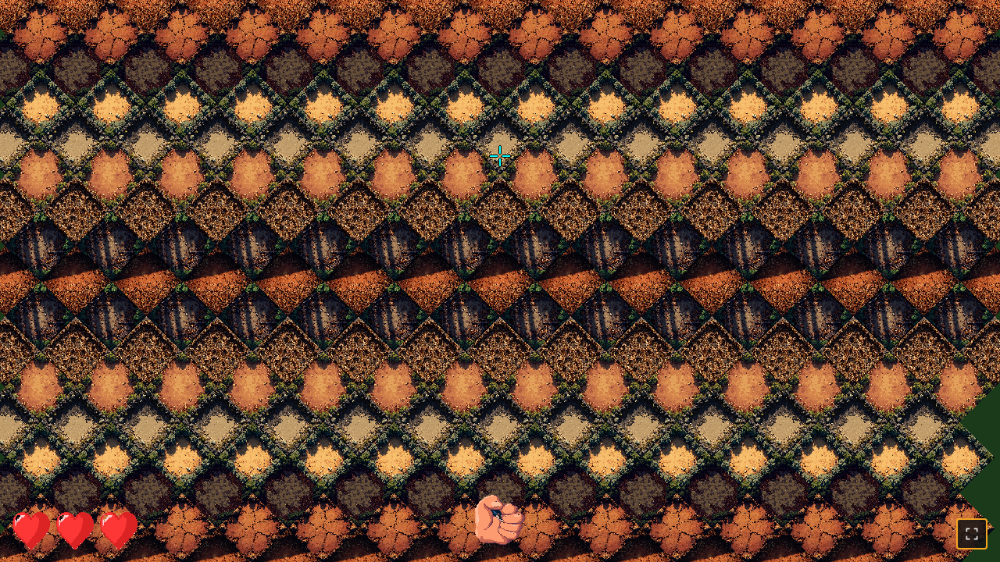
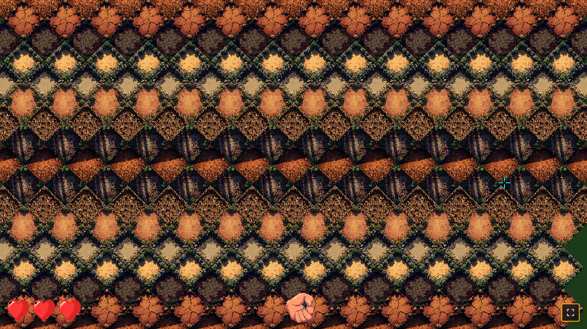
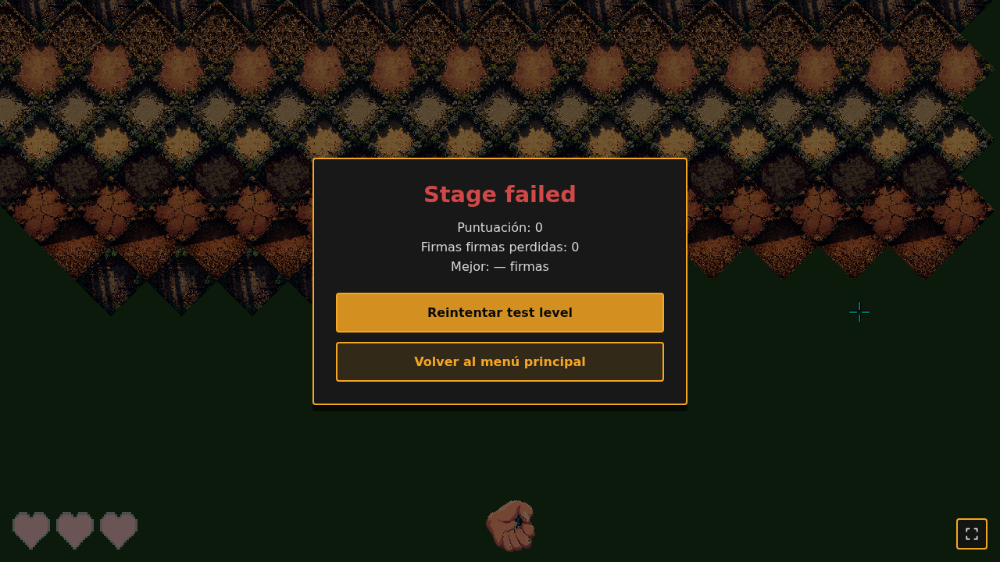

F3 — Catálogo de capturas (post-fix viewport + gameplay)
Capturas tomadas por Playwright MCP tras los fixes de consistencia cross-resolution
(commits 3de75ac, f96cfbd, 2f2eb6a).
El HUD (mano + corazones) y el mundo iso escalan juntos via design viewport 1280×720,
con tileSize=64 constante en todas las resoluciones.
1) f3-menu.png — Cursor arriba, mano apunta arriba

Observado:
- Mano pixel art con boli anclada abajo-centro (x=640, y=688) en design space.
- Boli apunta hacia arriba (rotación 0°) siguiendo el cursor en y=200.
- 3 corazones rojos vivos abajo-izquierda, en línea horizontal.
- Mundo iso tileado con sprites de enemigos visibles (test level con 12 enemigos).
- Esquinas del sprite con alpha=0 (sin artefactos magenta).
2) f3-gameplay.png — Cursor a la derecha, mano rotada

Observado:
- Mano rotada apuntando al cursor (derecha-arriba, ~58°).
- Boli señala correctamente al cursor.
- Corazones sin cambios (integridad 3).
- Tap dispara papeleta desde la mano hacia el target iso (verificado en diag interno:
fireAtIso(1.10, -2.43, hand=640,688)).
3) f3-boot.png — Test level post-tick (integridad 0)

Observado:
- 3 corazones grises/empty (integrity=0, game over).
- Mano en posición de reposo (cursor @ centro).
- Mundo iso todavía renderizado (algunos enemigos no escaparon por la nueva lógica Manhattan).
- Smoke e2e: 12 spawn + integridad exhausted + 0 console errors ✓.
URLs:
Test level: http://100.116.137.66:8000/?test=1&seed=12345
Catálogo: http://100.116.137.66:8000/tests/f3-screenshots.html
Producción (main menu): http://100.116.137.66:8000/